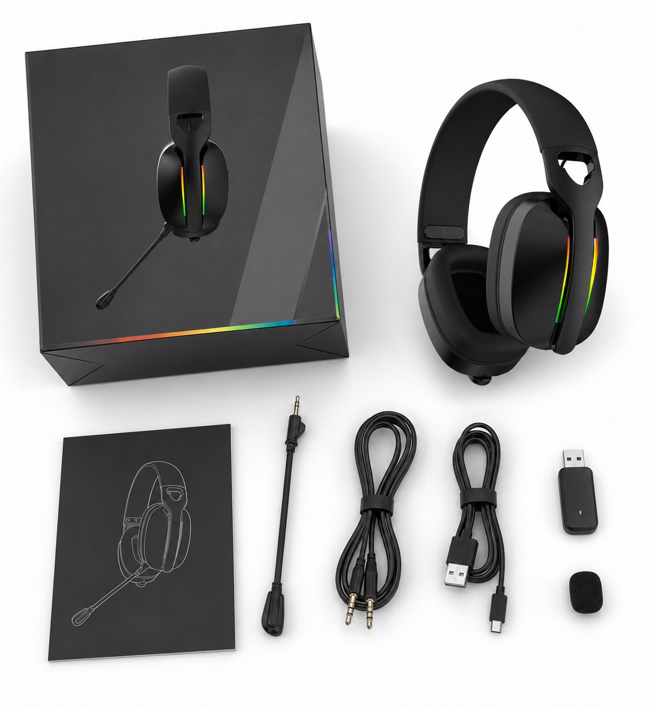
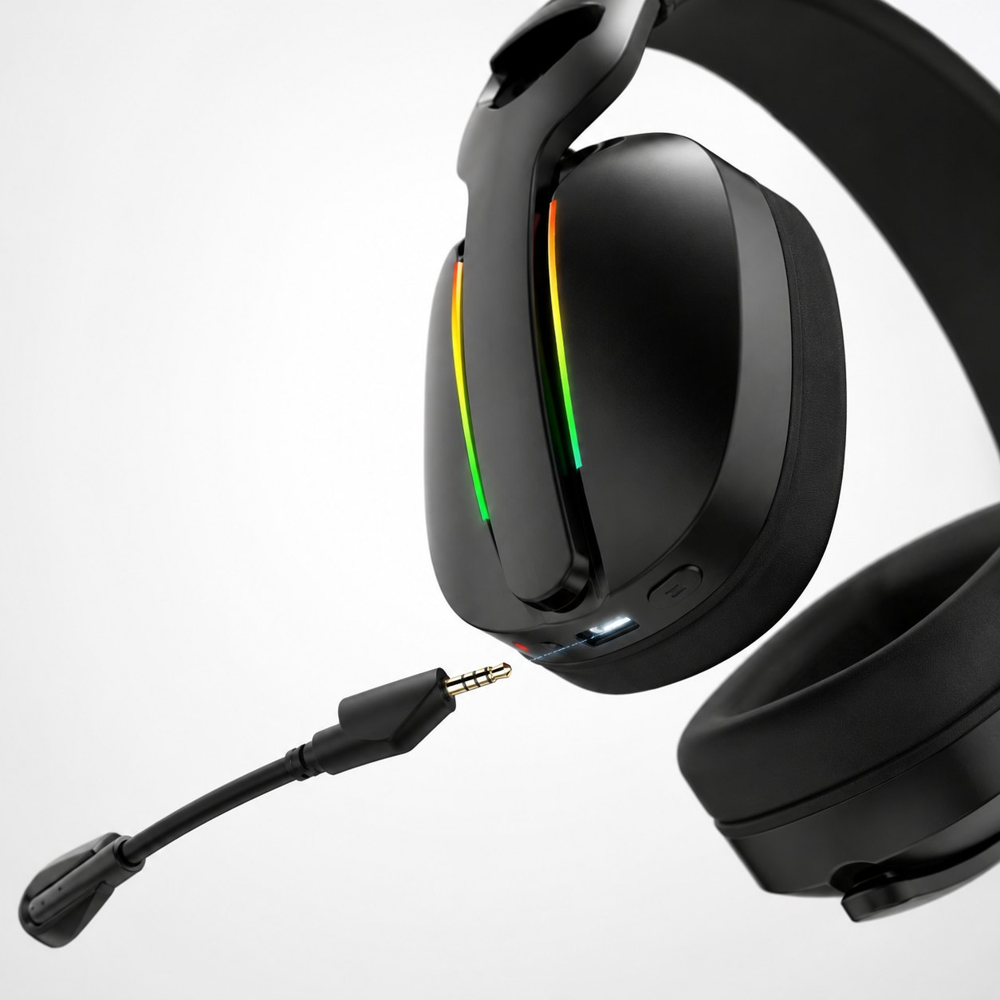
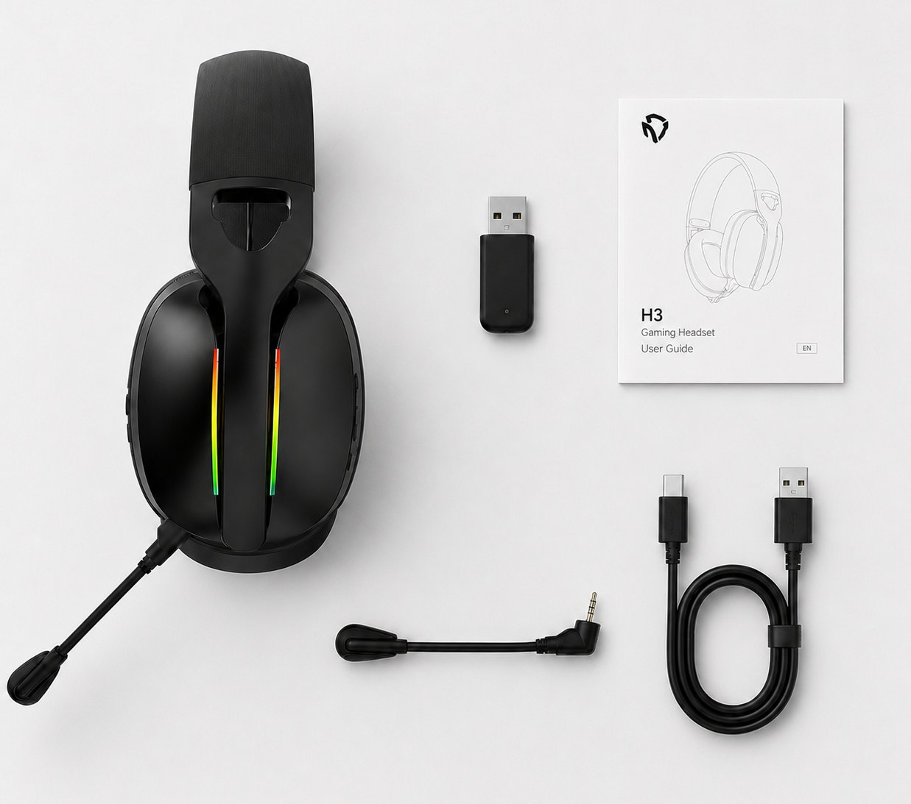
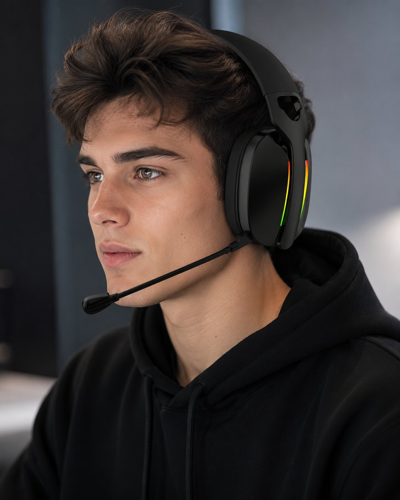
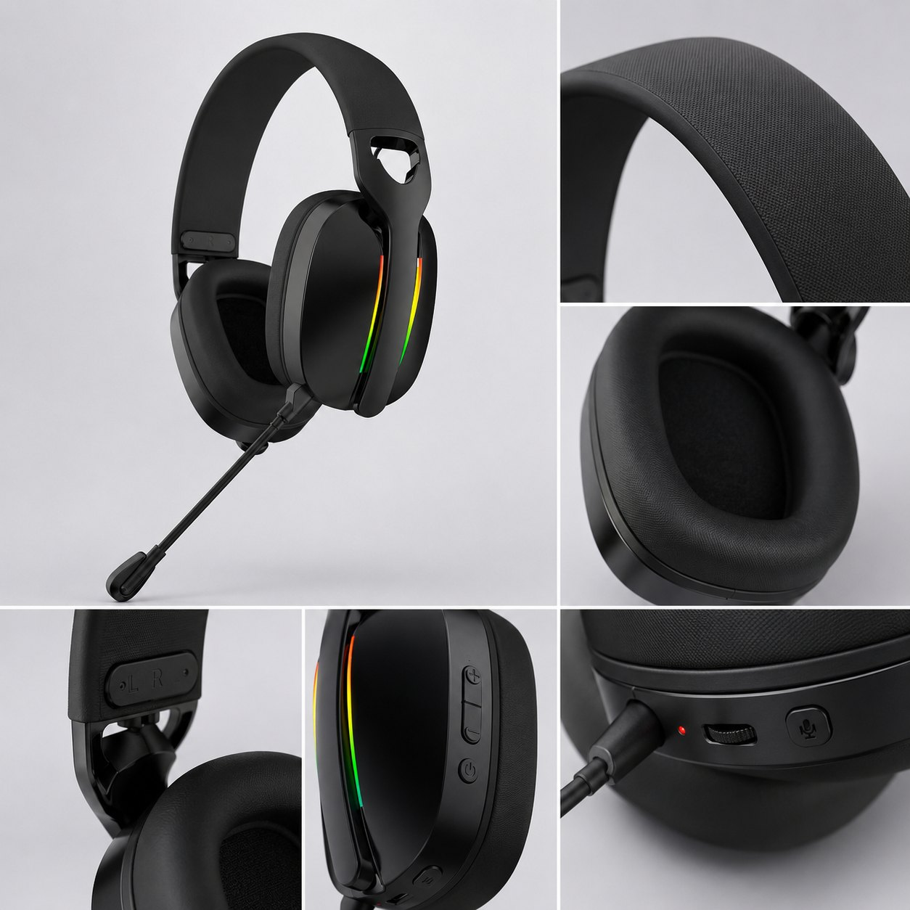

Packaging and accessory set
The packaging image supports discussion of box direction, cables, receiver, microphone parts, documents and sample content checks.

2.4G wireless gaming headset sample
A clean 2.4G wireless gaming headset sample with a 40mm driver, 500mAh battery, detachable microphone, RGB option and new product image evidence for importer and private-label review.

Official product video
Watch production-floor scenes and the finished G935 presentation on the official TALRIVO YouTube channel, then use the documented details below to prepare a sample inquiry.
Product image evidence
Use these product, accessory and use-scene images to discuss sample configuration, microphone structure, packaging direction and content checks before approval.

The packaging image supports discussion of box direction, cables, receiver, microphone parts, documents and sample content checks.

Close-up imagery gives buyers a concrete reference for the microphone plug, boom structure and connection point.

The flatlay helps confirm receiver, cable, detachable microphone and printed material requirements during sample discussion.
The lifestyle image gives a channel-ready visual reference for PC gaming use and product display planning.

The wearing image supports headset size, headband profile, earcup coverage and microphone placement review.

Detail views cover headband texture, ear cushion shape, RGB area, buttons, charging port and microphone controls.
Key points
Use the confirmed product-sheet data to compare G935 before requesting a sample, packaging review or quotation.
The current product sheet lists a 40mm driver with 32-ohm impedance and a 20Hz-20kHz frequency response.
Listed playback time is approximately 25 hours with lighting off, with approximately two hours listed for charging.
The plug-in boom microphone and extendable headband support practical gaming sample evaluation.
G935 provides a lighter, less aggressive visual direction for gaming collections while retaining RGB accents.
Documented specifications
Confirm the final sample version, lighting, receiver, accessories and packaging before a bulk order.
Sample evaluation
G935 is useful when buyers want a clean 2.4G wireless direction with detachable microphone evidence and an official factory/product video. Keep the sample review tied to the exact receiver, accessory set and packaging contents being quoted.
Customization
Product fit
Use these points to understand where this model fits in a product collection.
Product FAQ
The current sheet lists a 40mm driver, 32-ohm impedance, 20Hz-20kHz response, 500mAh battery, approximately 25 hours without lighting and approximately 20ms 2.4G latency.
Yes. The current design uses a detachable boom microphone and an extendable headband structure.
Check the 2.4G receiver, target device setup, detachable microphone, wearing comfort, accessory set, packaging contents, official video context and any document questions for the selected version.
Logo, color, packaging, manual language and accessory requirements can be reviewed after the sample version and order scope are confirmed.
Yes. Compare G935 with G938, G940 and G941 by driver, battery, design, microphone and target channel before sampling.
Related pages
Share the destination market, sales channel, quantity range, sample timing and customization scope for a model-specific G935 review.